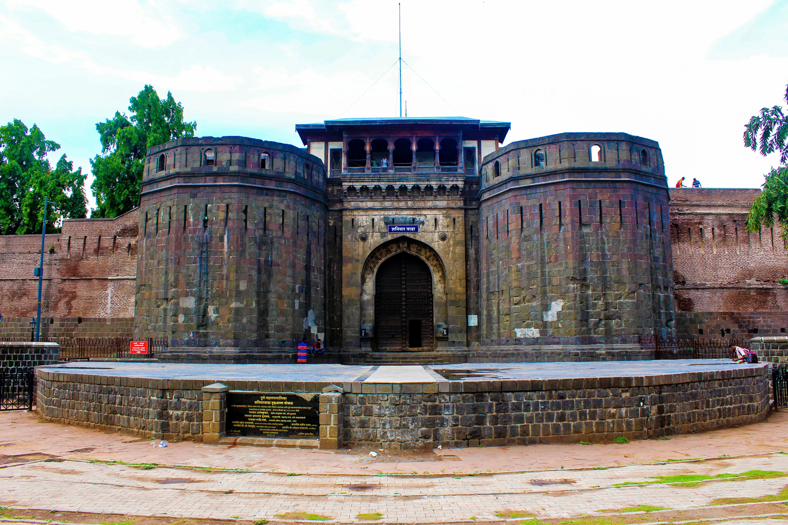
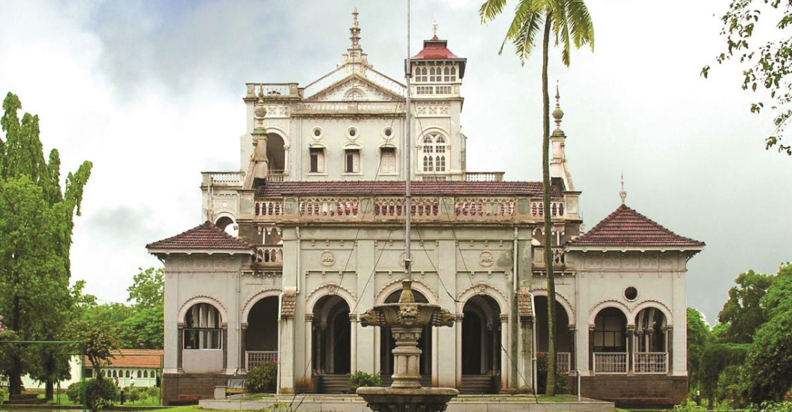

Shaniwar Wada

Shaniwar Wada was originally constructed in 1732 by the Peshwas of the Maratha Empire as their residence.
It was built at a cost of 16,110 rupees, a considerable sum during that period.
The fort was largely destroyed in a fire in 1828, leaving only the stone base and fortification walls intact.
Despite its partial destruction, Shaniwar Wada remains a significant historical landmark and tourist attraction in Pune.
Aga Khan Palace

Aga Khan Palace was built in 1892 by Sultan Muhammad Shah Aga Khan III in Pune.
It was built to provide employment to the famine-stricken villagers of the surrounding areas.
The palace is closely associated with Mahatma Gandhi, who was interned here from 1942 to 1944 during India's freedom struggle.
Today, Aga Khan Palace serves as a memorial to Mahatma Gandhi and his philosophy, housing a museum dedicated to him.